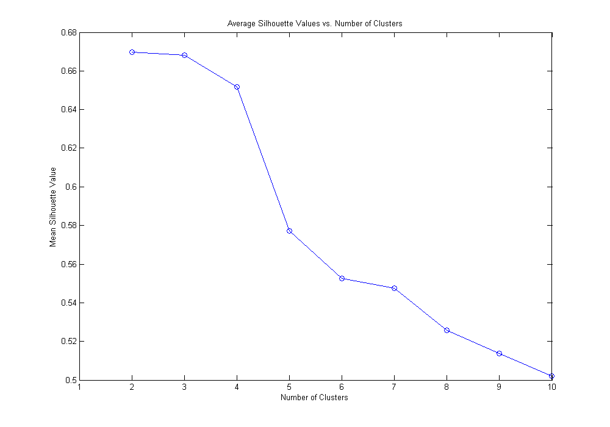

Clustering Corporate Bonds
Clustering is a form of unsupervised learning technique. The purpose of clustering is to identify natural groupings of data from a large data set to produce a concise representation based on common characteristics. Cluster analysis has wide ranging applications including computational biology, climatology, psychology and medicine, social network analysis, business and marketing. Clustering may be employed for various reasons including data summarization, compression, efficiently finding nearest neighbors, identifying similar objects etc.
In this example, several unsupervised machine learning techniques available in MATLAB are highlighted. One may apply one or more of the techniques to partition their data in different interesting ways.
Contents
- Description of the Data
- Import Data
- Slice Data
- Visualize Data
- Select Features to use for Clustering
- Speed up Computations using Parallel Computing
- Clustering Techniques
- Partitional Clustering
- k-Means Clustering
- Hierarchical Clustering
- Neural Networks - Self Organizing Maps (SOMs)
- Overlapping Clustering
- Fuzzy C-Means Clustering
- Probability Plot for Fuzzy C-means
- Gaussian Mixture Models (GMM)
- Probability Plot for GMM
- Cluster Evaluation
- Visualize Similarity Matrix
- Hierarchical Clustering: Cophenetic Corr. Coeff. and Dendrogram
- k-Means Clustering: Determining Correct Number of Clusters
- Shut Down Workers
Description of the Data
We have simulated some data to reflect characteristics of Corporate and other kinds of bonds.
The clustering goal is to segment the corporate bond data using distance based and probability based clustering techniques.
% Attributes:
- Type : type of bond (categorical: Corp, Muni, Treas, Zero)
- Name : name of company issuing the bond (string)
- Price : market price of the bond (numeric)
- Coupon : coupon rate of the bond (numeric)
- Maturity : maturity date of the bond (string date)
- YTM : yield to maturity of the bond (numeric)
- CurrentYield : current yield of the bond
- Rating : credit rating of the bond (categorical: AAA, AA, A, BBB, BB, B, CCC, CC, D, NA, Not Rated)
- Callable: bond is callable or not (binary: 0 or 1)
Import Data
Import the data into MATLAB. Here we have the data previously pre-processed and stored into a MAT-file. However, one may import the data from a different source and pre-process it before applying any clustering techniques.
load BondData
settle = floor(date);
Slice Data
In this case, we will only work with corporate bonds with a rating of CC or higher. Amongst the corporate bonds, we only keep those which will mature after the settle date and whose YTM is greater than zero and less than 30.
% Add numeric maturity date and settle date columns to dataset bondData.MaturityN = datenum(bondData.Maturity, 'dd-mmm-yyyy'); bondData.SettleN = settle * ones(length(bondData),1); % Dataset arrays make it easier to slice the data as per our needs corp = bondData(bondData.MaturityN > settle & ... bondData.Type == 'Corp' & ... bondData.Rating >= 'CC' & ... bondData.YTM < 30 & ... bondData.YTM >= 0, :); % Set the random number seed to make the results repeatable in this script rng('default');
Visualize Data
One can open the variable corp or bondData, in the Variable Editor and interactively create different kinds of plots by selecting 1 or more columns.
As one creates the plots, MATLAB tries to help by echoing the commands on to the Command Window.
% Coupon Rate vs. YTM plot, differentiated by credit rating gscatter(corp.Coupon,corp.YTM,corp.Rating) % Label the plot xlabel('Coupon Rate') ylabel('YTM') % Here we can see that bonds with higher ratings have lower YTM and coupon % rates and vice versa, as one may expect.
Select Features to use for Clustering
In this case, we expect that Coupon Rate, Yield-to-Maturity, Current Yield and Credit Rating should be sufficient to cluster the data.
Additionally, for now, we will use the clustering techniques to partition the data into 3 clusters. We will look at ways to help us decide the appropriate number of clusters, later.
% Features bonds = double(corp(:,[4,6:8])); % Number of Clusters to create numClust = 3;
Speed up Computations using Parallel Computing
If Parallel Computing Toolbox is available, the computation will be distributed to 2 workers for speeding up the evaluation.
if matlabpool('size') == 0 matlabpool open 2 end
Starting matlabpool using the 'local' profile ... connected to 2 workers.
Clustering Techniques
The definition of a cluster is imprecise and the best definition depends on the nature of the data and the desired results.
The common clustering techniques discussed in literature include distance-based, probability-based and density-based methods. In this example, we will discuss distance-based and probability-based techniques.
Partitional Clustering
In case of partitional clustering , the data points are divided into non-overlapping sets (clusters) such that each data point is part of exactly one set, for instance, k-Means clustering or self-organizing maps (SOMs). If each cluster may have subclusters, then it is called hierarchical clustering.
k-Means Clustering
k-Means clustering is a partitioning method. The function kmeans partitions data into k mutually exclusive clusters, and returns the index of the cluster to which it has assigned each observation.
kmeans uses an iterative algorithm that minimizes the sum of distances from each object to it's cluster centroid, over all clusters. A variety of distance measures such as correlation, hamming, cityBlock etc. are available.
dist_k = 'cosine'; options_km = statset('UseParallel', true); kidx = kmeans(bonds, numClust, 'distance', dist_k, 'options', options_km); % Visualize results plotBondClusters(corp, kidx, 'k-Means Clustering')
Hierarchical Clustering
Hierarchical Clustering groups data over a variety of scales by creating a cluster tree or dendrogram. The tree is not a single set of clusters, but rather a multilevel hierarchy, where clusters at one level are joined as clusters at the next level. A variety of distance measures such as Euclidean, Mahalanobis, Jaccard etc. are available.
dist_h = 'spearman'; link = 'weighted'; hidx = clusterdata(bonds, 'maxclust', numClust, 'distance' , dist_h, 'linkage', link); % Visualize results plotBondClusters(corp, hidx, 'Hierarchical Clustering')
Neural Networks - Self Organizing Maps (SOMs)
Neural Network Toolbox supports unsupervised learning with self-organizing maps (SOMs) and competitive layers.
SOMs learn to classify input vectors according to how they are grouped in the input space. SOMs learn both the distribution and topology of the input vectors they are trained on. One can make use of the interactive tools to setup, train and test a neural network. It is then possible to auto-generate the code for the purpose of automation. The code in this section has been auto-generated.
% Create a Self-Organizing Map dimension1 = 3; dimension2 = 1; net = selforgmap([dimension1 dimension2]); % Train the Network net.trainParam.showWindow = 0; [net,tr] = train(net,bonds'); % Test the Network nidx = net(bonds'); nidx = vec2ind(nidx)'; % Visualize results plotBondClusters(corp, nidx, 'SOM')
Overlapping Clustering
While clustering, if a data point can simultaneously exist in more than one clusters, it is known as overlapping or fuzzy clustering, for example, fuzzy C-means clustering or Gaussian mixture models. A probability or membership weight (ranging from 0 to 1) is assigned to each data point. Often, an additional constraint, that is, the sum of weights is equal to 1, is imposed.
Fuzzy C-Means Clustering
Fuzzy C-means (FCM) is a data clustering technique wherein each data point belongs to a cluster to some degree that is specified by a membership grade. The function fcm returns a list of cluster centers and several membership grades for each data point.
fcm iteratively minimizes the sum of distances of each data point to its cluster center weighted by that data point's membership grade.
options = nan(4,1); options(4) = 0; % Hide iteration information by passing appropriate options to FCM [centres,U] = fcm(bonds,numClust, options); [~, fidx] = max(U); fidx = fidx'; % Visualize results plotBondClusters(corp, fidx, 'Fuzzy C-Means Clustering')
Probability Plot for Fuzzy C-means
Here, we visualize the membership grades between different clusters along two dimensions, viz. credit ratings and coupon rates. One may create similar plots along other dimensions as well.
plotClusterProb(numClust, corp, U', 'FCM' )
Gaussian Mixture Models (GMM)
Gaussian mixture models are formed by combining multivariate normal density components. gmdistribution.fit uses expectation maximization (EM) algorithm, which assigns posterior probabilities to each component density with respect to each observation. The posterior probabilities for each point indicate that each data point has some probability of belonging to each cluster.
gmobj = gmdistribution.fit(bonds,numClust); gidx = cluster(gmobj,bonds); % Visualize results plotBondClusters(corp, gidx, 'Gaussian Mixture Mode')
Probability Plot for GMM
Here, we visualize the probability that a data point belongs to a particular cluster, along two dimensions, viz. credit ratings and coupon rates. One may create similar plots along other dimensions as well.
P = posterior(gmobj,bonds); plotClusterProb(numClust, corp, P, 'GMM' , '2D')
Cluster Evaluation
Almost every clustering algorithm will find clusters in a data set, even if that data set has no natural cluster structure. It is important to be able to distinguish whether there is non-random structure in the data. Also, how does one determine the correct number of clusters existing in the data?
Visualize Similarity Matrix
One may be able to judge clustering visually by plotting its similarity matrix. If we have well separated clusters, then if we re-order the similarity matrix based on cluster labels and plot it, we would expect it should be roughly block diagonal.
[dist_metric_h, dist_metric_k] = plotSimilarityMatrix(bonds, dist_h, hidx, dist_k, kidx );
Hierarchical Clustering: Cophenetic Corr. Coeff. and Dendrogram
Cophenetic correlation coefficient is typically used to evaluate which type of hierarchical clustering is more suitable for a particular type of data. It is a measure of how faithfully the tree represents the similarities/dissimilarities among observations.
Dendrogram is a graphical representation of the cluster tree created by hierarchical clustering.
Z = linkage(dist_metric_h,link); cpcc = cophenet(Z,dist_metric_h); disp('Cophenetic correlation coefficient: ') disp(cpcc) set(0,'RecursionLimit',5000) figure dendrogram(Z) set(0,'RecursionLimit',500) xlabel('Data point index') ylabel ('Distance b/w data points') title(['CPCC: ' sprintf('%0.4f',cpcc)])
Cophenetic correlation coefficient:
0.89029
k-Means Clustering: Determining Correct Number of Clusters
To get an idea of how well-separated the clusters are, one can make use of silhouette plot. The silhouette plot displays a measure of how close each point in one cluster is to points in the neighboring clusters. This measure ranges from +1, indicating points that are very distant from neighboring clusters, through 0, indicating points that are not distinctly in one cluster or another, to -1, indicating points that are probably assigned to the wrong cluster.
A more quantitative way to compare the silhouette values for different number of clusters is to look at the average silhouette values in each case.
% Plot the silhouette values for k-means clustering by creating 2 and 3 % clusters respectively for i=2:3 figure kidx = kmeans(bonds,i,'distance',dist_k,'options',options_km); [~,h] = silhouette(bonds,kidx,dist_k); title(['Silhouette values with ' num2str(i) ' clusters']) snapnow end % Compute and plot the average silhouette values for 2 through 10 clusters numC = 10; silh_m = nan(numC,1); for i=1:numC kidx = kmeans(bonds,i,'distance',dist_k,'options',options_km); silh = silhouette(bonds,kidx,dist_k); silh_m(i) = mean(silh); end figure plot(1:numC,silh_m,'o-') xlabel('Number of Clusters') ylabel('Mean Silhouette Value') title('Average Silhouette Values vs. Number of Clusters')

Warning: Failed to converge in 100 iterations. > In kmeans>loopBody at 391 In smartForReduce>(parfor body) at 111 In parallel_function>make_general_channel/channel_general at 900 In remoteParallelFunction at 28
Shut Down Workers
Release the workers if there is no more work for them
if matlabpool('size') > 0 matlabpool close end
Sending a stop signal to all the workers ... stopped.